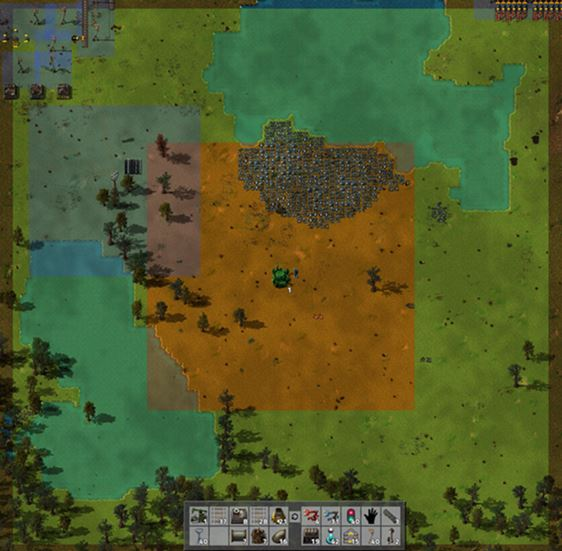
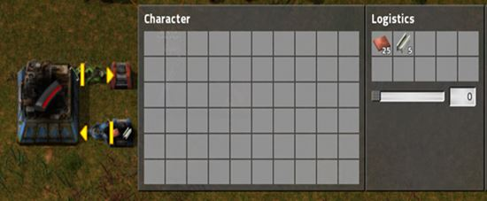
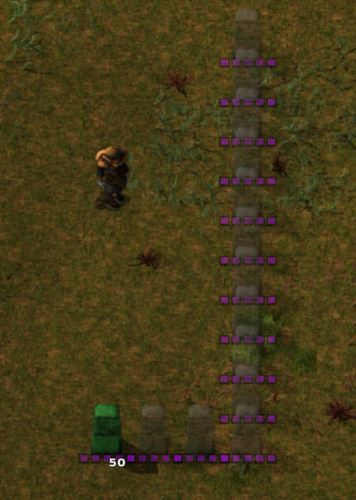
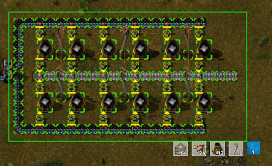
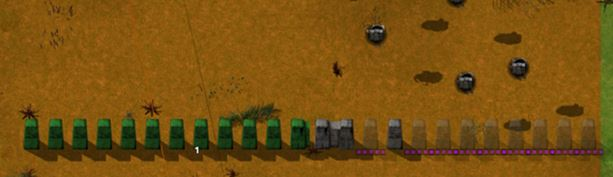
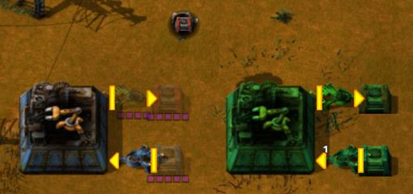
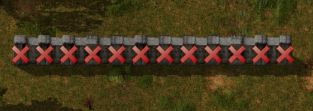
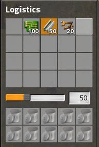
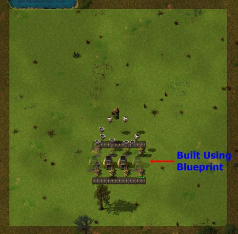
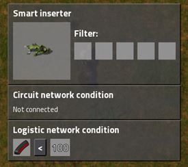

The Logistics System is what allows automated production, building, and repairing with robots. The Logistics System consists of several different types of chests that are specific to the system, as well as two types of robots that each perform a specific set of tasks, and last but not least the Roboport which is what allows the whole system to work in your Factory.
Before we move on I would like to link to a
video tutorial that explains all the things that will be talked about throughout this section in case you prefer to just watch a video rather than read the info.
One important thing I want to point out before we continue is that you should not mix up the Logistics System and the Circuit Network. They have a similar component which is the Smart Inserter, but other than that they are not connected and do not interact.
As mentioned above, there are two different types of robots and they each have separate tasks that they can perform. Along with this they each have different areas within the Logistics System that they can work in. I want to clarify something ahead of time otherwise it might confuse you. When I refer to the Logistics System I am talking about the entire system as a whole, and mean something different than the Logistics Network. You will understand better once we proceed… The two types of robots are Logistic Robots and Construction Robots. The Logistic Robots are the guys that will perform the tasks related to automated production when items are requested somewhere. The Construction Robots take care of automatically repairing things if they have Repair Packs available, replacing broken structures (again if replacements are available), building new things with Blueprints and hauling items to and from Storage Chests after they have been deconstructed.
Not only do the two different robots perform specific tasks, they have specific areas in which they can do this. These areas are defined by the Roboports when you place them down (picture below).

The orange area is Logistics Network area and the Logistic robots can only work within that area. The green area is how far the Construction Network extends and the Construction bots can work all the way out to the edges of it. It is important to clarify though that the Construction bots can also work in the orange area as well, so technically their operation area is from the Roboport out to the edges of the green zone. Now obviously the coverage that one Roboport provides is never going to be enough for your whole base, so naturally you can have multiple Roboports all making up one huge network. If you want them to all be part of the same network though you have to make sure they are connected when you place them. This is indicated by the yellow dotted line between Roboports when you go to connect them.
As long as a Roboport is connected to at least one other Roboport in the network then it becomes part of it as well. The Roboports also house the robots themselves as well as having many slots to hold Repair Packs.
Now that you know what the Roboports do, how to expand the network, and what the robots do in a general since, let's talk about the different chests that come with the system and enable everything to work. There are four different chests that interact with the Logistics System:
Storage Chest: The Storage Chests are probably the most basic of them all. They do exactly what their name says and just simply store items in the system. Anything that has been deconstructed will be brought to storage chests, as well as anything that is taken from your personal Logistics Trash Slots (these will be explained later). So they essentially just store miscellaneous items. Obviously the robots can take from them as well.
Requester Chest: Requester Chests are what make automated production with robots possible. They are used to request the required/desired items from within the Logistics Network. Notice that I said Network rather than System in this instance because any chests that you want the Logistic Robots to use need to be within the Logistics Network coverage area. You can request items using the slots in the middle and use the slider to tell it how much of the item you want brought to the chest. So say you set it to 50 Iron Plate, whenever the amount of plate within the chest drops below 50, the robots will bring enough to fill it to 50 again, so on and so forth. There will be some setups shown below of what some automated production using these chests might look like.
Passive Provider Chest: These are the other component to the automated production process with robots. So we know that you request items to the assembling area with the Requester Chests, but once the finished product is done being made in the Assembling Machines it needs to go into a Passive Provider Chest to become part of the system and usable by robots. These act almost exactly like a Storage Chest but the main difference is that robots will not store anything in them. They are only filled via Inserters putting things in them. So it is important to use these instead of Storage Chests for your output chests on Assemblers, because if you just use th
Active Provider Chest: This is fairly similar to the Passive Provider Chests in the fact that robots will never put anything in them, so they can only be filled by Inserters or by you manually placing items in them. The difference though is that they essentially want to be emptied. So when anything is put into the Active Providers, an order is sent out into the System for the items to be pulled out as soon as possible and put in Storage or brought to something that is requesting them. These are best used in situations where you never want the chest to fill up and the thing inserting into the chest to be constantly working. So these could be used in unloading stations for trains if you want the contents from the train to immediately be move from the chest so it doesn't fill up. They could be used if a miner is inputting into them and don't want the chest to fill up and the miner to stop.
The next quick thing to go over is which robots will use each chest… Construction Robots will never have anything to do with Requester Chests, but will interact with most the others. They can place and pull things from Storage Chests, and can take things from Passive Providers if necessary. The Logic Robots will interact with all the chests. They will be the ones to empty Active Providers and place those items in storage. They obviously bring things to Requester Chests, and can pull from Passive Providers as well. However it should noted that Active Providers and Storage Chests will take priority when the Logic Robots need to get an item. If the required item(s) is in a Storage/Active Provider they will take from that rather than a Passive Provider.
One last important thing to note is that when a chest is ordered to be deconstructed, the Construction Robots will move all the items out of it and then remove the chest.
At this point I would hope you have a fairly good idea of how the Logistics System works. Here is an example setup to hopefully help clarify anything else.

Setup for automated production of Piercing Ammo
So as you can see I have set the requester chest to ask for the required items to make the ammo. I set the amount of each item to be about 5x what it actually needs. It is good to at least do double the amount it needs so that the robots can keep up with the constant supply so the machine doesn't stop. As mentioned above you can manually set how many of each item is requested, but if you want a quicker way to do it, you can simply Shift – Right Click the machine once the recipe is set, and then Shift – Left Click the Requester Chest and it will automatically have the chest request 2x the amount of required items.
Automated Construction & Deconstruction
The main thing that Construction Robots are used for will be automated construction and deconstruction as well as repairing and replacing damaged or broken structures. The processing of repairing/replacing things is quite simple and doesn't need much explanation. As long as the structure that needs to be repaired or replaced is within the Logistics System (so within the orange or green area made by Roboports), and some Repair Packs or replacement items are within the system then the Construction Robots will do it all by themselves. Again, the Repair Packs can either be in a Roboport, or a Passive Provider or Storage Chest. The replacement items need to be in storage or a Passive Provider.

Now on to the actual construction and deconstruction. Let's start with construction with the robots… There are two ways you can order the robots to build something, either manually by ghost placing (this will be explained in a minute) the structures yourself or by creating a Blueprint and stamping that down.
The first way I mentioned which involves you manually doing it can be referred to as ghost placing. You do this by holding down Shift and then placing things down like you normally would. You will notice a see-through version of what you did rather than the actual things to be built.
This orders the Constructions Robots to place the actual structures over the ghost prints you just made. Obviously the items to do so need to be within the system and the actually thing being built needs to be within the coverage area. So that is the manual way of doing it each time before you have access to Blueprints.
Using Blueprints makes it much easier especially for larger things that need to be built or something that you will need to do multiple times such as that production setup I demonstrated above. To create a Blueprint of something you just need to either ghost place or actually place down the thing(s) you want and then take your Blueprint and drag it over the design you just made:

Dragging it will create a selection box and anything within that box is blueprinted. Once you are finished it will bring up a little window where you can see the preview of what the Blueprint looks like and customize the icon it will show when you go to use it. Now that you have a Blueprint all you have to do is stamp it down where you want the stuff to be built and it will create ghost structures just like you can do manually and the robots will come build the stuff. The Blueprints just simply make the process more automated and easier since once you have made a Blueprint you can just place it down rather than running around and doing it all yourself.
Some examples of some things that Blueprints are really good for.


Logistics Assembling Machine setup
Solar/Accumulator Layouts

The process of automated deconstruction is really quite simple. You just need to build a Deconstruction Planner and then drag it over anything you want taken down and the robots will come remove the structures. The things that are set to be deconstructed are indicated by the little red "Xs" on top of them. You can also deconstruct ghost structures before they are placed if you want to cancel the order to build it.
Player Logistic Slots & Trash Slots

Another neat feature with the Logistics System is the ability to request items to you and have undesired ones taken away. Once you unlock Player Logistics Slots you will have some inventory type spaces that are in between your main inventory and the crafting menu. You can request items to have the robots bring you with these slots. You do it the same way you can with a Requester Chest by simply clicking one of the slots, selecting the item you want and then setting the amount. Anytime the amount of that item drops below the selected amount in your inventory the robots will bring you more.
You also have access to player Logistic Trash Slots. These essentially do the opposite as the Logistic Request Slots. They will be under your request slots and you just drop items into them that you want taken out of your inventory and put into the Logistics storage. You can also Shift – Click some items into them as well which can be much faster. It is important to know though that you can't do this with some types of items so if you go to Shift – Click something into the Trash Slots and it won't work then you will just have to do it manually.
Personal Roboport
The last thing to talk about is the Personal Roboport. This was a new addition to the game in the 0.12 release and adds a lot of new capabilities to how and where you can build things with robots. The Personal Roboport essentially acts as a normal Roboport that you carry around with you. It is a module that goes into the Modular or Power Armor suits, so as long as you are wearing that with the Roboport in it you essentially make yourself a walking Roboport.
Before we continue I would like to link to a
Friday Facts article written by the developers that goes over the Personal Roboport and explains things quite well.
Below is a summary of the article.

Again, this pretty much makes you like a walking Roboport, so if anything within the coverage area of your Personal Roboport needs to be built or repaired, Construction Robots that are in your inventory will go take care of it.
Anything that is built or repaired by the robots in your personal port will come out of your inventory and not the normal network. The Personal Roboport will use robots that are in your inventory, so make sure to always have some bots in your inventory if you want to use it. The Personal Roboports are separate from other Roboports and won't connect to them, and it takes priority over normal networks. So even if you are within the range of a normal Roboport and have your Personal Roboport equipped, the Construction Robots in your inventory will be used to perform any needed tasks before ones in the normal network. However, if you for example put a blueprint down and are in range of a normal network and don't have the required items in your inventory to build it, the robots in the normal network will take over the order rather than the ones in your inventory from your Personal Port.
It is good to keep in mind that the Personal Roboports can only support a limited number of robots so even if you have a full stack of Construction bots in your inventory only a few of them will be used. You can use more though by simply adding more Personal Ports to your armor. This will also increase the amount of charging stations, energy buffer to charge the bots, and your coverage area will increase. You can have as many of these as you want in your armor as long as they will fit, but beware that they do take quite a large amount of power so make sure you have enough power in your suit to support them.
Smart Inserter Usage in the Logistics Network
I talked about Smart Inserters a little bit near the beginning of this guide in the Belt & Inserter Mechanics section. One of the best features of the Smart Inserters though is the ability to tie them into the Logistics Network. They are best used in those automated production setups that were talked about earlier in this section. You can use them either on the input or output part of the setup, but they are most commonly used on the output into the Passive Provider chest. Of course you can limit the amount of items in a chest by closing out some of the slots in the chest with the little red "x" at the bottom, but that doesn't really allow you to do very specific quantities. You can also set some wire conditions (these will be talked about in the Circuit Network section) to set specific quantities of items to be in a chest, but that won't tie into the Logistics System.

Once you have unlocked the Logistics System stuff then when you go to place a Smart Inserter down the bottom box on the Inserter will be where you can set a condition for the Logistics Network.
Just click on the box and select the correct item (the one being made in the assembling machine), and then you can set the amount just like with a Requester Chest. There are also Less Than, and Greater Than, symbols to set. So lets use the same example as we did earlier with Piercing Ammo. Say you have a setup making Piercing Ammo and you don't want there to be more than 100 in the network at any given time, then on the Smart Inserter you can set it to be Piercing Ammo less than 100. What this is telling the Inserter is that if there is less than 100 Piercing Ammo in the network then you can work, otherwise don't work. So once there is 100 in the network then the Inserter won't work anymore which means the assembler backs up and doesn't create anymore until the Inserter starts working again which means the amount has dropped below 100. This is extremely useful because you can set specific quantities of items in the network and you won't just have infinite quantities of everything.
I believe that covers all the main subjects and items in regards to the Logistics System. If you are interested in some good Blueprint designs for things like Solar Panels and Accumulators check out the Additional Info, Setups & Builds section.